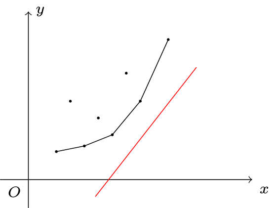

OI Wiki · prijevod · Dinamičko programiranjeOI Wiki · translation · Dynamic programming
Optimizacija nagibomSlope optimization
Sadržaj
Uvodni primjer
„HNOI2008” Pakiranje igračaka
U redu je \(n\) igračaka, \(i\)-ta igračka ima vrijednost \(c_i\). Tih \(n\) igračaka treba podijeliti na nekoliko segmenata. Cijena segmenta \([l,r]\) je \((r-l+\sum_{i=l}^r c_i-L)^2\), gdje je \(L\) konstanta. Odredite najmanju ukupnu cijenu podjele.
\(1\le n\le 5\times 10^4, 1\le L, c_i\le 10^7\).
Naivno DP rješenje
Neka \(f_i\) označava najmanju cijenu podjele prvih \(i\) predmeta na nekoliko segmenata.
Jednadžba prijelaza stanja: \(f_i=\min_{j<i}\{f_j+(i-(j+1)+pre_i-pre_j-L)^2\}=\min_{j<i}\{f_j+(pre_i-pre_j+i-j-1-L)^2\}\).
Ovdje \(pre_i\) označava zbroj prvih \(i\) brojeva, tj. \(\sum_{j=1}^i c_j\).
Vremenska složenost ovog pristupa je \(O(n^2)\), što nije dovoljno za ovaj zadatak.
Optimizacija
Pojednostavnimo gornju jednadžbu prijelaza stanja: neka je \(s_i=pre_i+i,L'=L+1\); tada je \(f_i=\min_{j<i}\{f_j+(s_i-s_j-L')^2\}\).
Prebacimo li članove koji ne ovise o \(j\) van, dobivamo
Promotrimo eksplicitni oblik pravca \(y=kx+b\) i prebacimo članove: \(b=y-kx\). Informaciju koja ovisi o \(j\) zapisujemo kao \(y\), informaciju koja ovisi i o \(i\) i o \(j\) kao \(kx\), a ono što minimiziramo (informaciju koja ovisi o \(i\)) kao \(b\), odnosno odsječak na osi \(y\). Konkretno, neka je
Tada se jednadžba prijelaza zapisuje kao \(b_i = \min_{j<i}\{ y_j-k_ix_j \}\). Promatramo li \((x_j,y_j)\) kao točke u ravnini, \(k_i\) je nagib pravca, a \(b_i\) odsječak pravca nagiba \(k_i\) koji prolazi točkom \((x_j,y_j)\). Zadatak se sveo na odabir prikladnog \(j\) (\(1\le j<i\)) koji minimizira odsječak pravca.

Kao na slici, pravac nagiba \(k_i\) translatiramo odozdo prema gore dok neka točka \((x_p,y_p)\) ne legne na njega; tada je \(b_i=y_p-k_ix_p\) i \(b_i\) postiže minimum. Nakon što izračunamo \(f_i\), točku \((x_i,y_i)\) dodajemo u skup točaka kao novu DP odluku. Kako onda održavati skup točaka?
Lako je uočiti da točka u kojoj \(b_i\) može postići minimum nužno leži na donjoj konveksnoj ljusci. Zato pri traženju \(p\) ne moramo enumerirati svih \(i-1\) točaka, nego samo točke na konveksnoj ljusci. U ovom zadatku \(k_i\) raste s porastom \(i\), pa konveksnu ljusku možemo održavati monotonim redom.
Konkretno, neka \(K(a,b)\) označava nagib pravca kroz \((x_a,y_a)\) i \((x_b,y_b)\). Promotrimo red \(q_l,q_{l+1},\ldots,q_r\) koji održava točke donje konveksne ljuske. Drugim riječima, za \(l<i<r\) uvijek vrijedi \(K(q_{i-1},q_i) < K(q_i,q_{i+1})\).
Održavamo pokazivač \(e\) kojim računamo minimum \(b_i\). Trebamo pronaći \(e\) takav da je \(K(q_{e-1},q_e)\le k_i< K(q_e,q_{e+1})\) (slučajevi \(e=l\) i \(e=r\) zahtijevaju posebnu provjeru); tada je \(p=q_e\), tj. \(q_e\) je optimalna odluka za \(i\). Budući da je \(k_i\) monotono rastuć, broj pomaka pokazivača \(e\) je amortizirano \(O(1)\).
Pri umetanju točke \((x_i,y_i)\) provjeravamo vrijedi li \(K(q_{r-1},q_r)<K(q_r,i)\); ako nejednakost ne vrijedi, izbacujemo \(q_r\), sve dok ne bude zadovoljena. Zatim \(i\) umećemo na kraj reda \(q\).
Time smo složenost DP-a optimizirali na \(O(n)\).
Sažmimo algoritam za gornji ogledni zadatak optimizacije nagibom:
- Stavi početno stanje u red.
- Svaki put pravcem \(f(i)\) povezanim s \(i\) „presijeci” održavanu konveksnu ljusku, pronađi optimalnu odluku i ažuriraj \(dp_i\).
- Dodaj stanje \(dp_i\). Ako neko stanje (tj. točka na konveksnoj ljusci) nakon dodavanja \(dp_i\) više nije na ljusci, treba ga ukloniti prije dodavanja \(dp_i\).
U nastavku predstavljamo naprednije primjene optimizacije nagibom, u kojima se ona kombinira s binarnim pretraživanjem/podjelom/strukturama podataka kako bi se održavale DP jednadžbe s lošijim svojstvima (bez nekih svojstava monotonosti).
Optimizacija DP-a binarnim pretraživanjem/CDQ-om/balansiranim stablom
Kad u točki \(i\) tražimo optimalnu odluku, pravcem \(f(i)\) povezanim s \(i\) presijecamo održavanu konveksnu ljusku. Pogođena točka je optimalna odluka.
U gornjem primjeru nagib pravca mijenja se monotono s \(i\), ali u nekim zadacima nagib nije monoton. Tada moramo održavati svaki čvor konveksne ljuske i svaki put presjeći ljusku trenutnim pravcem. Taj se postupak može izvesti binarnim pretraživanjem, jer su nagibi između susjednih točaka konveksne ljuske monotoni.
Pakiranje igračaka, izmijenjeno
U redu je \(n\) igračaka, \(i\)-ta igračka ima vrijednost \(c_i\). Tih \(n\) igračaka treba podijeliti na nekoliko segmenata. Cijena segmenta \([l,r]\) je \((r-l+\sum_{i=l}^r c_i-L)^2\), gdje je \(L\) konstanta. Odredite najmanju ukupnu cijenu podjele.
\(1\le n\le 5\times 10^4,1\le L\le 10^7,-10^7\le c_i\le 10^7\).
Jedina razlika u odnosu na zadatak „Pakiranje igračaka” jest da vrijednosti igračaka mogu biti negativne. Nastavljajući prijašnju ideju, neka \(f_i\) označava najmanju cijenu podjele prvih \(i\) predmeta na nekoliko segmenata.
Jednadžba prijelaza stanja: \(f_i=\min_{j<i}\{f_j+(pre_i-pre_j+i-j-1-L)^2\}\).
Ovdje je \(pre_i = \sum_{j=1}^i c_j\).
Istom transformacijom jednadžbe dobivamo
No sada dva uvjeta više ne vrijede:
- nagib pravca više nije monoton;
- apscise točaka odluka koje dodajemo više nisu monotone.
I dalje razmatramo održavanje konveksne ljuske.
Pri traženju optimalne odluke, tj. pri presijecanju ljuske pravcem, umjesto traženja početka monotonog reda koristimo: binarno pretraživanje na ljusci. Binarnim pretraživanjem nalazimo brid ljuske čiji je nagib najbliži nagibu pravca i time dobivamo optimalnu odluku.
Pri dodavanju točke odluke, tj. pri dodavanju točke na ljusku, imamo dva načina održavanja.
Prvi je način izravno održavati ljusku balansiranim stablom. Tada binarno pretraživanje odluke postaje binarno pretraživanje po balansiranom stablu, a umetanje točke odluke postaje umetanje čvora u balansirano stablo uz brisanje nekoliko točaka izbačenih iz ljuske. Ideja je jednostavna, ali je implementacija zamorna.
U nastavku predstavljamo pristup temeljen na CDQ podjeli.
Neka \(\text{CDQ}(l,r)\) označava izračun \(f_i,i\in [l,r]\). Promotrimo \(\text{CDQ}(1,n)\):
-
Najprije pozovemo \(\text{CDQ}(1,mid)\) i izračunamo \(f_i,i\in[1,mid]\). Zatim od točaka odluka iz intervala \([1,mid]\) izgradimo konveksnu ljusku i njome ažuriramo \(f_i,i\in [mid+1,n]\). Skup točaka odluka sada je fiksan, ne dodajemo točke tijekom računanja DP vrijednosti kao prije, pa \(f_i\) za \(i \in [mid+1,n]\) možemo najprije sortirati po nagibu pravca \(k_i\) i zatim DP vrijednosti računati monotonim redom. Naravno, DP vrijednosti možemo računati i binarnim pretraživanjem na statičkoj ljusci.
-
Za svaku točku iz \([mid+1,n]\) čija optimalna odluka leži u intervalu \([1,mid]\) ovaj korak postavlja optimalni odgovor. Nakon tog koraka sve točke iz \([1,mid]\) odigrale su svoju ulogu i njihova prisutnost u ljusci više ne utječe na kasnija ažuriranja. Zato točke odluka iz tog intervala možemo jednostavno odbaciti i preostali dio desnog intervala riješiti pozivom \(\text{CDQ}(mid+1,n)\).
Vremenska složenost je \(O(n\log^2 n)\).
Usporedbom zadataka „Pakiranje igračaka” i „Pakiranje igračaka, izmijenjeno” možemo zaključiti sljedeće:
- Binarno pretraživanje/CDQ/balansirano stablo i slično mogu optimizirati izračun DP jednadžbe i do neke mjere smanjiti složenost, ali ne mogu promijeniti samu jednadžbu.
- Svojstva DP jednadžbe ovise o značajkama ulaznih podataka, ali sama DP jednadžba ovisi o matematičkom modelu zadatka.
Sažetak
Optimizaciju nagibom treba primjenjivati fleksibilno; njezina je bit svesti optimizacijski problem na problem minimuma/maksimuma odsječka na osi u ravnini, povezan s konveksnom ljuskom. Kod jednadžbi s lošijim svojstvima ponekad je potrebno pomoći se strukturama podataka, a to ovisi o konkretnom zadatku.
Zadaci
Contents
Introductory example
\"HNOI2008\" Toy packing
There are \(n\) toys in a row, the \(i\)-th toy has value \(c_i\). The \(n\) toys have to be split into several segments. The cost of a segment \([l,r]\) is \((r-l+\sum_{i=l}^r c_i-L)^2\), where \(L\) is a constant. Find the minimum total cost of a split.
\(1\le n\le 5\times 10^4, 1\le L, c_i\le 10^7\).
Naive DP solution
Let \(f_i\) be the minimum cost of splitting the first \(i\) items into several segments.
State transition equation: \(f_i=\min_{j<i}\{f_j+(i-(j+1)+pre_i-pre_j-L)^2\}=\min_{j<i}\{f_j+(pre_i-pre_j+i-j-1-L)^2\}\).
Here \(pre_i\) is the sum of the first \(i\) numbers, i.e. \(\sum_{j=1}^i c_j\).
The time complexity of this approach is \(O(n^2)\), which is not enough for this problem.
Optimization
Let us simplify the state transition equation above: let \(s_i=pre_i+i,L'=L+1\); then \(f_i=\min_{j<i}\{f_j+(s_i-s_j-L')^2\}\).
Moving the terms independent of \(j\) outside, we get
Consider the slope-intercept form of a line, \(y=kx+b\), and rearrange it as \(b=y-kx\). We express the information depending on \(j\) as \(y\), the information depending on both \(i\) and \(j\) as \(kx\), and the quantity to be minimized (the information depending on \(i\)) as \(b\), i.e. the intercept. Concretely, let
Then the transition equation is written as \(b_i = \min_{j<i}\{ y_j-k_ix_j \}\). Viewing \((x_j,y_j)\) as points in the plane, \(k_i\) is the slope of a line and \(b_i\) is the intercept of the line with slope \(k_i\) passing through \((x_j,y_j)\). The problem becomes: choose a suitable \(j\) (\(1\le j<i\)) that minimizes the intercept of the line.
As in the figure, we translate the line with slope \(k_i\) upwards from below until some point \((x_p,y_p)\) lies on it; then \(b_i=y_p-k_ix_p\) and \(b_i\) attains its minimum. After computing \(f_i\), we add the point \((x_i,y_i)\) to the point set as a new DP decision. So how do we maintain the point set?
It is easy to see that a point at which \(b_i\) can attain its minimum must lie on the lower convex hull. Therefore, when looking for \(p\) we do not need to enumerate all \(i-1\) points, only the points on the convex hull. Moreover, in this problem \(k_i\) increases as \(i\) increases, so we can maintain the convex hull with a monotonic queue.
Concretely, let \(K(a,b)\) denote the slope of the line through \((x_a,y_a)\) and \((x_b,y_b)\). Consider the queue \(q_l,q_{l+1},\ldots,q_r\) that maintains the points of the lower convex hull. That is, for \(l<i<r\) we always have \(K(q_{i-1},q_i) < K(q_i,q_{i+1})\).
We maintain a pointer \(e\) to compute the minimum of \(b_i\). We need to find an \(e\) with \(K(q_{e-1},q_e)\le k_i< K(q_e,q_{e+1})\) (the cases \(e=l\) and \(e=r\) need special handling); then \(p=q_e\), i.e. \(q_e\) is the optimal decision for \(i\). Since \(k_i\) is monotonically increasing, the number of moves of \(e\) is amortized \(O(1)\).
When inserting a point \((x_i,y_i)\), we check whether \(K(q_{r-1},q_r)<K(q_r,i)\); if the inequality does not hold, we pop \(q_r\), until it is satisfied. Then we push \(i\) to the back of \(q\).
In this way the complexity of the DP is optimized to \(O(n)\).
To summarize the algorithm for the slope optimization template problem above:
- Push the initial state into the queue.
- Each time, use a line \(f(i)\) associated with \(i\) to "cut" the maintained convex hull, find the optimal decision, and update \(dp_i\).
- Add the state \(dp_i\). If a state (i.e. a point on the convex hull) is no longer on the convex hull after \(dp_i\) is added, it has to be removed before adding \(dp_i\).
Next we present more advanced applications of slope optimization, combining it with binary search/divide and conquer/data structures in order to maintain DP equations with worse properties (lacking some monotonicity properties).
Optimizing DP with binary search/CDQ/balanced trees
When looking for the optimal decision at point \(i\), we use a line \(f(i)\) associated with \(i\) to cut the convex hull we maintain. The point that is hit is the optimal decision.
In the example above, the slope of the line changes monotonically with \(i\), but in some problems the slope is not monotonic. Then we have to maintain every node of the convex hull and cut the hull with the current line each time. This can be done with binary search, because the slopes between adjacent points of the convex hull are monotonic.
Toy packing, modified
There are \(n\) toys in a row, the \(i\)-th toy has value \(c_i\). The \(n\) toys have to be split into several segments. The cost of a segment \([l,r]\) is \((r-l+\sum_{i=l}^r c_i-L)^2\), where \(L\) is a constant. Find the minimum total cost of a split.
\(1\le n\le 5\times 10^4,1\le L\le 10^7,-10^7\le c_i\le 10^7\).
The only difference from the "Toy packing" problem is that the values of the toys can be negative. Continuing the previous idea, let \(f_i\) be the minimum cost of splitting the first \(i\) items into several segments.
State transition equation: \(f_i=\min_{j<i}\{f_j+(pre_i-pre_j+i-j-1-L)^2\}\).
Here \(pre_i = \sum_{j=1}^i c_j\).
Applying the same transformation to the equation gives
However, now two conditions no longer hold:
- the slope of the line is no longer monotonic;
- the x-coordinates of the decision points being added are no longer monotonic.
We still consider maintaining the convex hull.
When looking for the optimal decision point, i.e. when cutting the hull with the line, we replace taking the front of the monotonic queue with: binary search on the hull. We binary search for the edge of the hull whose slope is closest to the slope of the line, which gives the optimal decision.
When adding a decision point, i.e. adding a point to the hull, we have two ways of maintaining it.
The first way is to maintain the hull directly with a balanced tree. Then the binary search for the decision point becomes a binary search on the balanced tree, and inserting a decision point becomes inserting a node into the balanced tree and deleting several points that are kicked out of the hull. This approach is conceptually simple but tedious to implement.
Below we present an approach based on CDQ divide and conquer.
Let \(\text{CDQ}(l,r)\) denote computing \(f_i,i\in [l,r]\). Consider \(\text{CDQ}(1,n)\):
-
We first call \(\text{CDQ}(1,mid)\) to compute \(f_i,i\in[1,mid]\). Then we build the convex hull of the decision points in \([1,mid]\) and use it to update \(f_i,i\in [mid+1,n]\). Now the set of decision points is fixed; unlike before, we do not add decision points while computing DP values, so we can first sort the \(f_i\) with \(i \in [mid+1,n]\) by the slope \(k_i\) of their lines and then compute the DP values with a monotonic queue. Of course, the DP values can also be computed by binary search on the static hull.
-
For every point in \([mid+1,n]\) whose optimal decision lies in \([1,mid]\), this step sets its optimal answer. After this step, all points in \([1,mid]\) have played their full role, and whether or not they are in the hull no longer affects later updates. Therefore we can simply discard the decision points of this interval and solve the remaining problem of the right interval with \(\text{CDQ}(mid+1,n)\).
The time complexity is \(O(n\log^2 n)\).
Comparing "Toy packing" and "Toy packing, modified", we can draw the following two conclusions:
- Binary search/CDQ/balanced trees etc. can optimize the computation of a DP equation and reduce the complexity to some extent, but they cannot change the equation itself.
- The properties of a DP equation depend on the characteristics of the data, but the DP equation itself depends on the mathematical model of the problem.
Summary
Slope optimization of DP has to be applied flexibly; its essence is to transform an optimization problem into a problem about the minimum/maximum intercept in the plane related to a convex hull. For equations with worse properties, data structures are sometimes needed to help, and that has to be decided problem by problem.